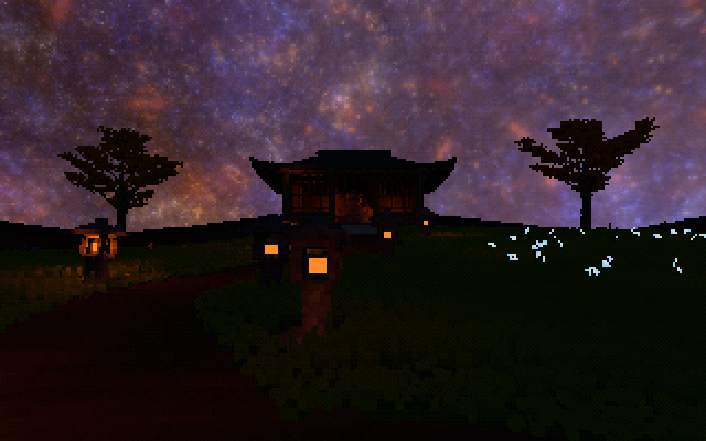
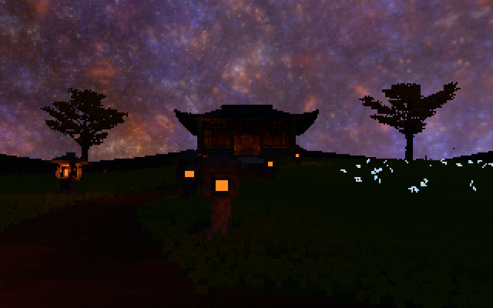
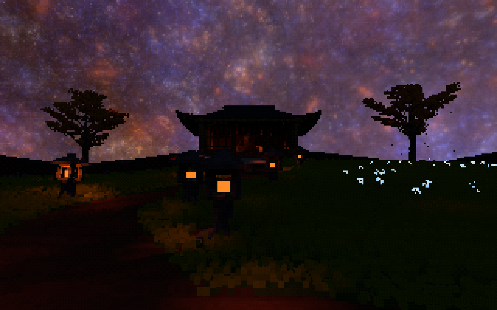

探针位置的 GPU 新旧对照
默认石灯场景每次检查 875,328 个有效探针方向；解析点光场景每次检查 889,408 个。与原有逐灯 evaluator 对照，均为零容差失败。
石灯场景最大绝对 RGB 误差约 2.98×10⁻⁸；多点光高亮阶段约 1.83×10⁻⁴，符合相对／绝对组合容差。
这证明探针处的投影、单位和传输一致，不证明任意草位置的插值无损。
探针端直接光已经接通，A/B 可实时切换。GPU 对照与动态生命周期通过，草着色成本明显下降；夜景也揭示了默认探针密度下的暖光损失。
重点看左侧石灯周围的草地。探针处的计算可以正确，但探针之间的照明峰值和阴影边界仍可能丢失。不能把这部分变暗解释为“无损优化”。


间距减半后，暖色照明更丰富，A/B 更接近。与此同时，原有间接光也因密度改变，所以必须在本组内比较，不能把 B32 → B16 的全部变化归功于直接光。

截图为独立实时运行，保留风、模拟与时序收敛差异，并非冻结帧逐像素对照。原图没有调整曝光、缩放或后处理；点击图片查看原尺寸。
默认石灯场景每次检查 875,328 个有效探针方向；解析点光场景每次检查 889,408 个。与原有逐灯 evaluator 对照，均为零容差失败。
石灯场景最大绝对 RGB 误差约 2.98×10⁻⁸；多点光高亮阶段约 1.83×10⁻⁴，符合相对／绝对组合容差。
这证明探针处的投影、单位和传输一致，不证明任意草位置的插值无损。
现有点光测试覆盖：添加、选灯溢出、增删遮挡物、移动、改色与强度、移除。直接场跟随 live 灯和几何重算；灯移除后直接响应全部归零。
最终生命周期完成，无残留直接贡献；第一次 60 秒运行未等到 DDGI 收敛，改用 120 秒完成，没有把超时当通过。
直接通道不加入原来的递归传输历史。真实石灯仍保留有限形状与透光查询；未知／失效的探针支持区走原路径，不将它们涂黑。
| 指标 | 原模式 | 共享场 |
|---|---|---|
| 实际 FPS | 21.74 | 31.88 |
| GPU 整帧中位数 | 36.12 ms | 22.78 ms |
| 草光照／姿态准备 | 19.74 ms | 6.09 ms |
| 直接场更新 | — | 0.84 ms |
| 原有 DDGI 射线 | 1.80 ms | 1.70 ms |
RTX 3060 Ti · 1600×1000 physical · 8 个有效灯 · 32-voxel grid · 相同默认场景 · 两次 16 秒 Release 运行末尾约 6 秒。GPU 指标只有 4／6 个日志样本，属初步证据。FPS 用帧计数／墙钟计算，不用条件日志里的帧时长均值。此前 2880×1620 的诊断不是这组基线。